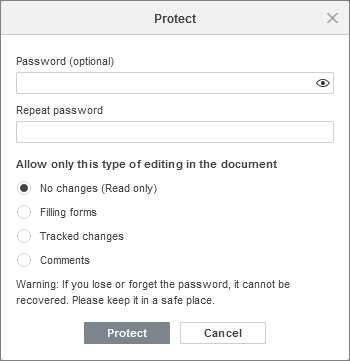

Zaštita dokumenata lozinkom
Možete zaštititi svoje dokumente lozinkom koja je potrebna vašim koautorima za ulazak u režim uređivanja. Lozinka se kasnije može promeniti ili ukloniti.
Lozinka se ne može povratiti ako je izgubite ili zaboravite. Čuvajte je na sigurnom mestu.
Svoje dokumente možete zaštititi i ograničavanjem prava pristupa.
Postavljanje lozinke
-
idite na karticu Datoteka u gornjoj traci sa alatima i izaberite opciju Zaštiti. Kliknite na dugme Dodaj lozinku da biste otvorili prozor Podesi lozinku,
ili idite na karticu Zaštita i izaberite opciju Šifruj,
-
unesite lozinku u polje Lozinka i ponovite je u polju Ponovi lozinku. Kliknite na da prikažete ili sakrijete znakove lozinke prilikom unosa,

-
Kliknite na OK kada završite.
Da bi otvorio dokument sa punim pravima pristupa, korisnik mora uneti postavljenu lozinku.
Promena lozinke
-
idite na karticu Datoteka u gornjoj traci sa alatima i izaberite opciju Zaštiti. Kliknite na dugme Promeni lozinku da biste otvorili prozor Podesi lozinku,
ili idite na karticu Zaštita i izaberite opciju Šifruj,
- unesite novu lozinku u polje Lozinka i ponovite je u polju Ponovi lozinku. Kliknite na da prikažete ili sakrijete znakove lozinke prilikom unosa.
- kliknite na OK.
Brisanje lozinke
- idite na karticu Datoteka u gornjoj traci sa alatima,
- izaberite opciju Zaštiti,
- kliknite na dugme Obriši lozinku.
Zaštita dokumenta
- idite na karticu Zaštita,
- kliknite na dugme Zaštiti dokument,
- unesite lozinku ako je potrebno,
-
izaberite potrebna prava pristupa dokumentu, pod uslovom da korisnik nije uneo lozinku:
- Bez izmena (samo čitanje) – korisnik može samo da pregleda dokument.
- Popunjavanje formulara – korisnik može samo da popunjava formular.
- Praćene izmene – korisnik može samo da vidi istoriju izmena i pregleda sam dokument.
- Komentari – korisnik može samo da ostavlja i odgovara na komentare.

- kliknite na Zaštiti kada završite.
Da biste uklonili zaštitu sa dokumenta, pod uslovom da je lozinka postavljena,
- idite na karticu Zaštita,
- kliknite na dugme Zaštiti dokument,
- unesite postavljenu lozinku u prozoru Ukloni zaštitu dokumenta.
Dodavanje potpisa
Ova funkcija je dostupna samo u Desktop Editorima.
Da biste dodali potpis,
- Idite na karticu Zaštita.
-
Kliknite na ikonu Potpis i izaberite potrebni tip:
- Dodaj digitalni potpis – unesite svrhu potpisivanja dokumenta i izaberite Sertifikat klikom na odgovarajuće dugme u otvorenom prozoru. Kada završite, kliknite na OK.
- Dodaj liniju za potpis – popunite polja Predloženi potpisnik, Titula potpisnika i E-mail potpisnika, kao i uputstva za potpisnika. Aktivirajte opciju Prikaži datum potpisa u liniji za potpis ako je potrebno. Kada završite, kliknite na OK.